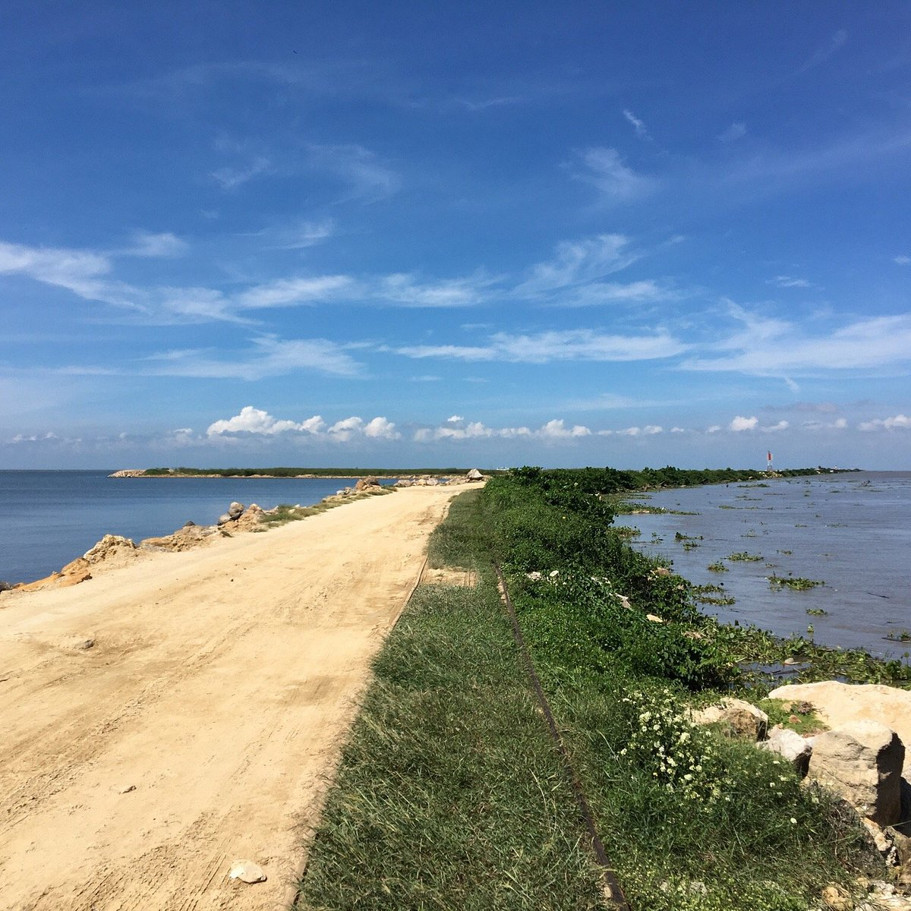
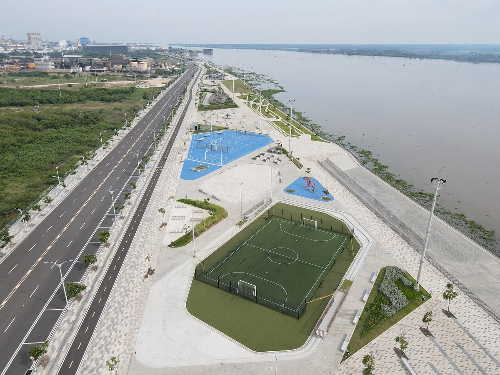
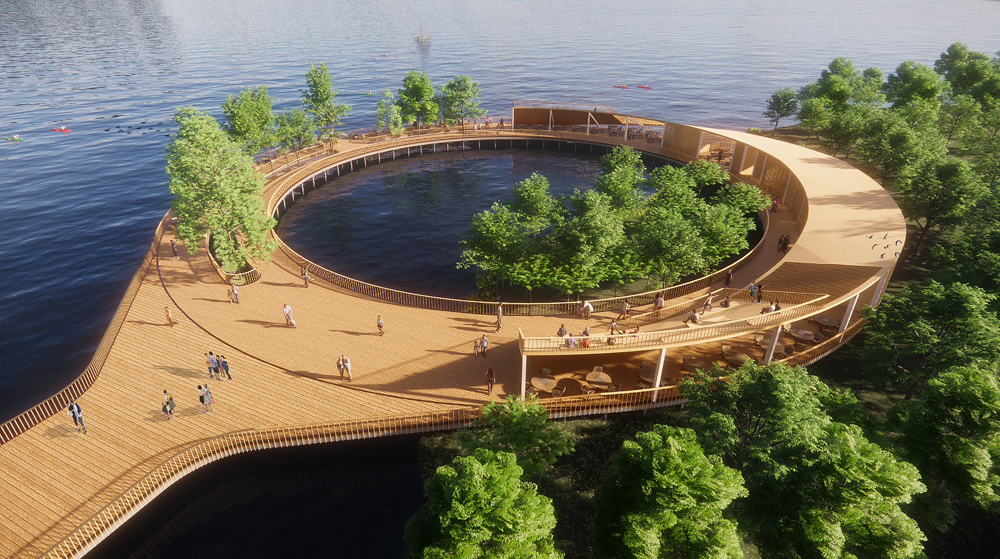
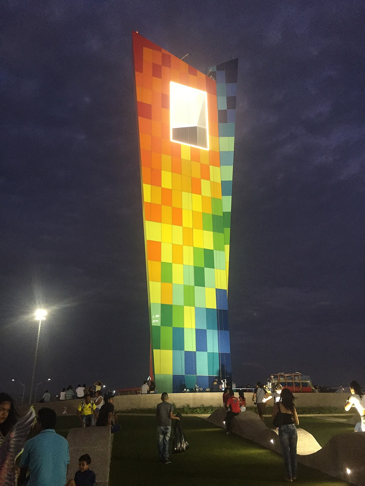
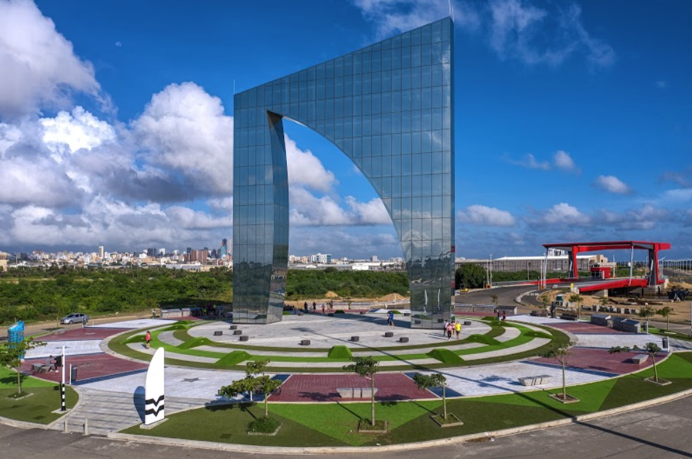
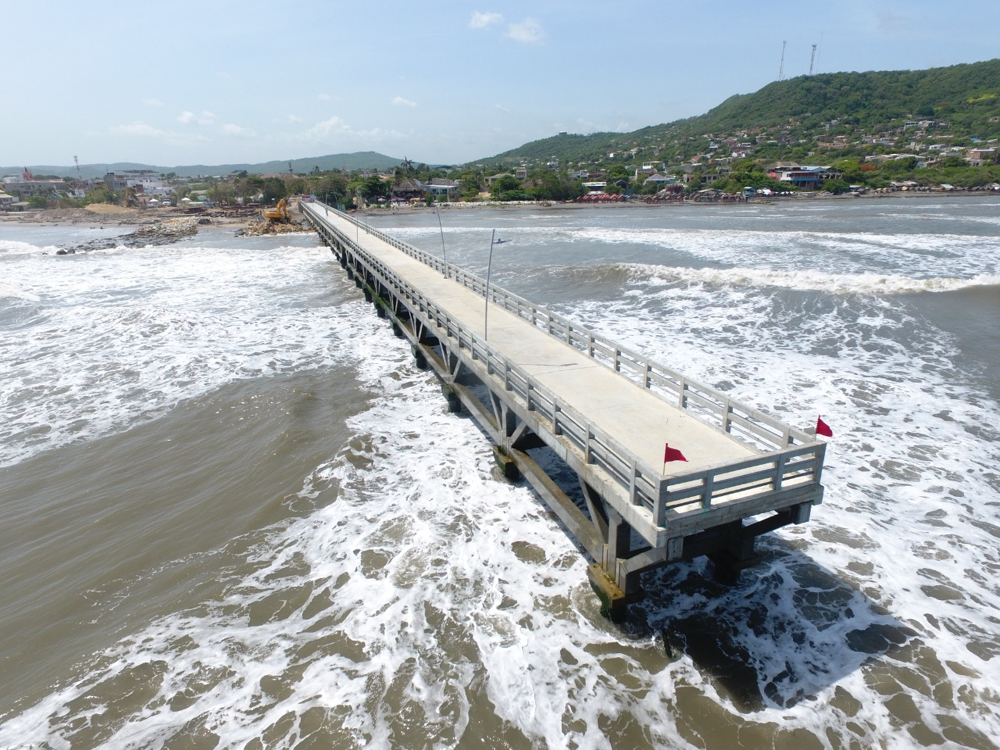

Está ubicada sobre la margen occidental del río Magdalena a 7,5 km de su desembocadura en el mar Caribe.
El clima de Barranquilla es de tipo tropical seco o xeromegaterno tropical, es decir, correspondiente a una vegetación propia de la sequedad y bajo altas temperaturas.
Bocas de Ceniza
Gran Malecón del Río
Ecoparque Mallorquín
Ventana al mundo
Ventana de Campeones
Muelle de Puerto Colombia
Zoológico de Barranquilla

La actividad deportiva en Barranquilla está regida y es promovida a nivel gubernamental por la Secretaría de Recreación y Deportes de la Alcaldía Distrital.
Desde principios del siglo xx, en la ciudad se han practicado principalmente el fútbol, el béisbol y el boxeo. También se practican variadas disciplinas como el baloncesto, el atletismo, la natación, el ajedrez, el ciclismo, el patinaje, el tenis, el golf, el tiro, el microfútbol, el karate, el taekwondo, el parapente, el bicicrós, los karts, el automovilismo, la pesca deportiva, el squash, el surfing, la halterofilia, el softbol y los bolos.
V Juegos Centroamericanos y del Caribe en 1946.
IV Juegos Bolivarianos en 1961.
XIV Juegos Nacionales en 1992.
Inauguración y partidos del grupo A de la Copa América 2001.
Juegos Centroamericanos y del Caribe 2006 (subsede).
Inauguración y 5 partidos de la Copa Mundial de Fútbol Sub-20 de 2011 (cuatro juegos por el Grupo E y uno de octavos de final).
XXIII Juegos Centroamericanos y del Caribe en 2018.
Christian David Suarez Mendoza
christianop508@gmail.com